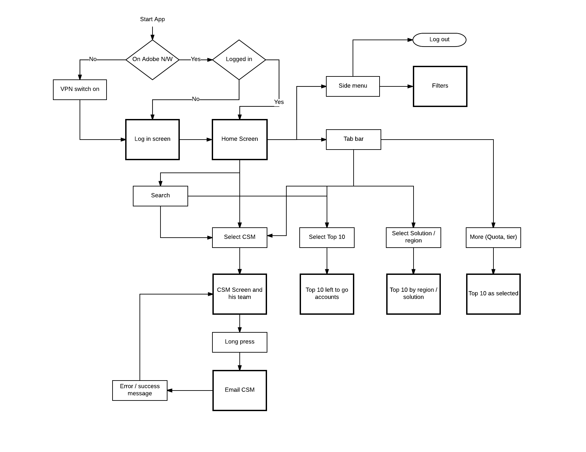
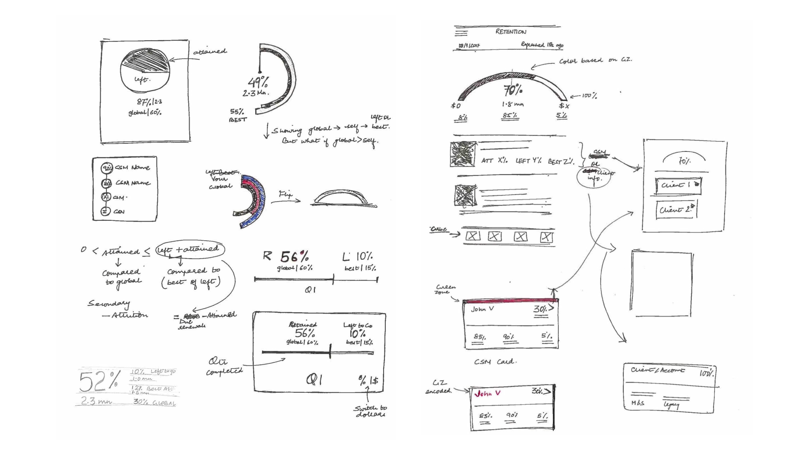
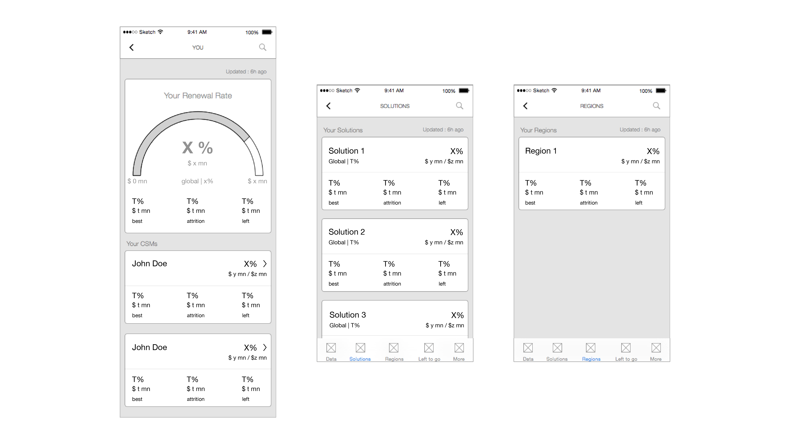

3.2 INSIGHTS
I realized that overall team performance was closely tied to individual performances, which in turn depended on the "total dollar value"
renewed. Thus, a CSM ought to be presented with
her accounts such that it informed her of each account's dollar value, and
how it could impact her overall performance. Similarly, a manager required insights about how her team numbers were
impacted by each CSM in her team. Most importantly, this pattern needed to be
made available to all managers, regardless of their role and level in the CSM hierarchy.
3.3 TASK FLOWS

3.4 SKETCHING IDEAS

3.5 WIREFRAMES
After sketching low-fidelity concepts and rough visualization sketches,
I zeroed in on a card as the main UI component.
I could represent information on client as well as team member by
using this component. This made the UX simple and consistent across screens.

Note : Because of NDA, I have replaced all numbers, region and solution names with dummy, alphabetical values.
4. PROMOTION
This was a self-initiated endeavor on the side to give the application a
professional release within the CSM organization. I designed a 45 seconds animated
video pitch, showcasing the application features and emphasizing the contribution of our
relatively new team. Instead of sending a generic email to CSMs, we hosted the QR code and the video pitch
on an internal website. This effort was much appreciated by the CSM organization, and
positively distinguishied our team within the global operations team.
5. IMPACT
- The application reduced opportunity and team check-in from 15-20 minutes to 2 minutes max.
- We observed 200 signups up within 48 hours of release, with repeat log in.
- The application was recognized and appreciated across Adobe, and showcased at Adobe’s Worldwide Sales Conference 2016 in Las Vegas